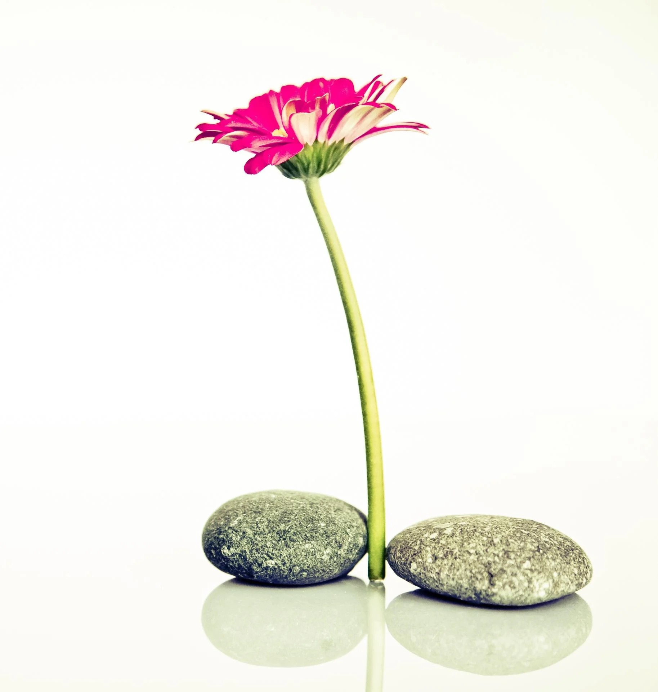
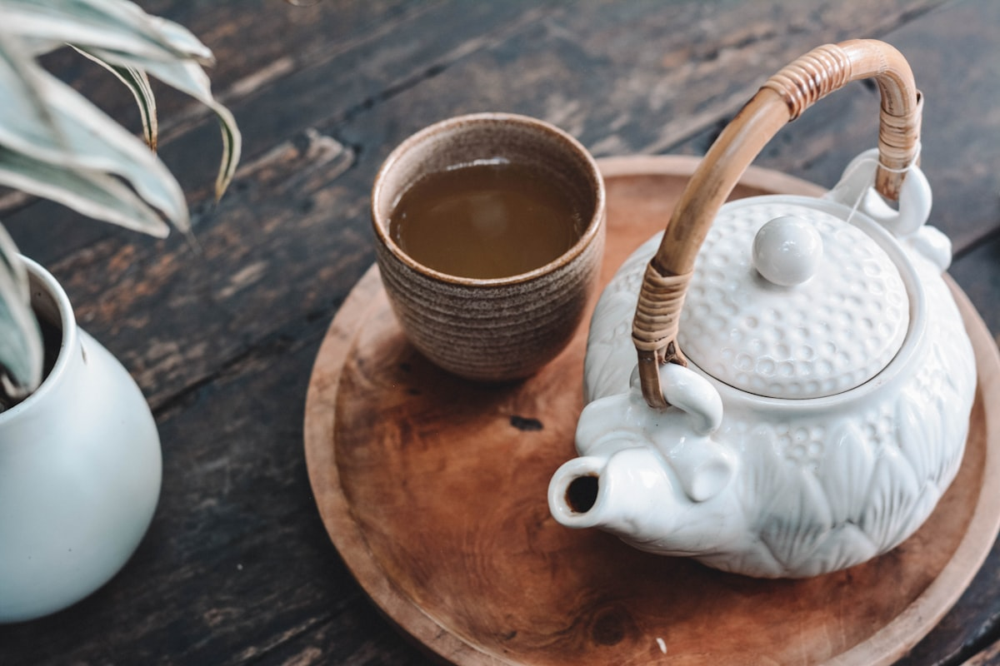
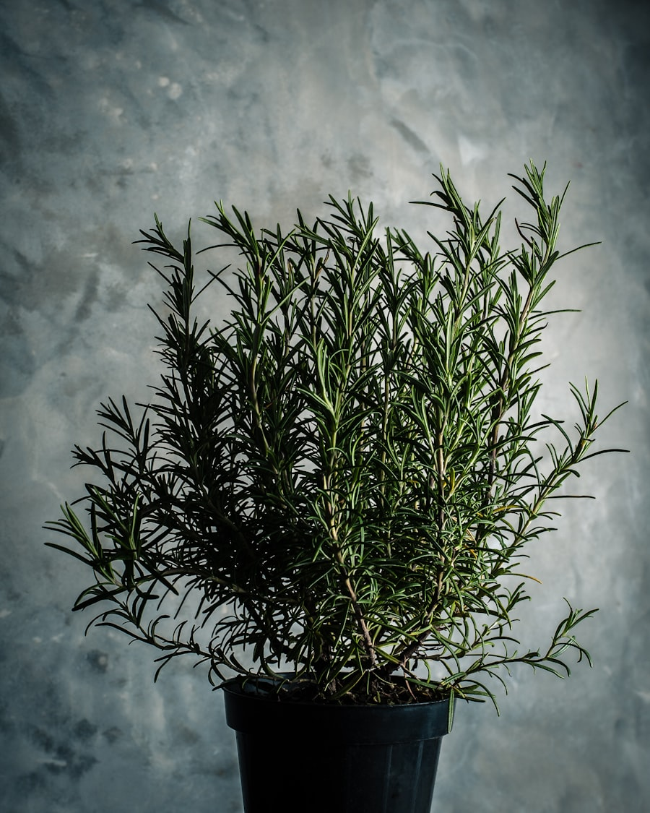

Préserver ou retrouver une bonne vitalité
Naturopathe hildegardienne certifiée FENA à Nort-sur-Erdre : bilan personnalisé, rééquilibrage alimentaire, plantes et réflexologie plantaire.

Une discipline holistique qui cherche la cause des dysfonctionnements, à partir d'un bilan personnalisé des forces et des fragilités de votre terrain.
La naturopathie s'adresse à toute personne souhaitant prendre soin de sa vitalité avec des moyens naturels, de 0 à 100 ans.
Des approches naturelles, adaptées à votre terrain

Approche hildegardienne
L'hygiène de vie inspirée de sainte Hildegarde de Bingen : alimentation à l'épeautre, plantes et équilibre du quotidien.
Rééquilibrage alimentaire
Retrouver une alimentation qui soutient votre énergie au quotidien, sans régime et sans frustration. Un accompagnement progressif, adapté à votre rythme de vie et à vos intolérances éventuelles.

Plantes et huiles
Phytothérapie, aromathérapie et gemmothérapie.
Réflexologie plantaire
La stimulation des zones réflexes du pied, en soutien de l'équilibre général.
Endocrino-psychologie et méthode Equilios
Deux approches complémentaires auxquelles Noémie est formée.
Un parcours né d'une expérience vécue
Devenue intolérante au gluten et aux laitages de vache vers 20 ans, Noémie a dû repenser entièrement ses habitudes alimentaires. Elle a découvert peu à peu une alimentation et une hygiène de vie qui lui permettent d'être en forme toute la journée, sans régime et en se faisant plaisir.
Diplômée en naturopathie de l'Institut Hildegardien, certifiée FENA et Bachelor européen, elle exerce aujourd'hui à Nort-sur-Erdre et fait partie du corps professoral de l'Institut Hildegardien.
Ils ont changé leur hygiène de vie
Des témoignages de personnes accompagnées par Noémie.
« Mes aphtes, mes coups de barre et mes ballonnements ont disparu »
Marie
Migraineux depuis l'enfance, Ludovic a vu ses migraines disparaître en deux mois
Ludovic
« L'épeautre, une céréale qui apporte de vrais bienfaits »
Anne
Les actualités du cabinet
Un espace que vous mettez à jour vous-même, sans logiciel à installer : horaires d'été, ateliers, conférences, nouveautés du cabinet. Les textes ci-dessous sont des exemples pour montrer l'emplacement.
Prendre rendez-vous
Une question sur la naturopathie ou envie de faire le point sur votre vitalité ? Noémie vous répond rapidement.
Formulaire de démonstration (maquette) : il n'envoie aucun message. Pour une vraie demande, téléphone ou e-mail ci-contre.